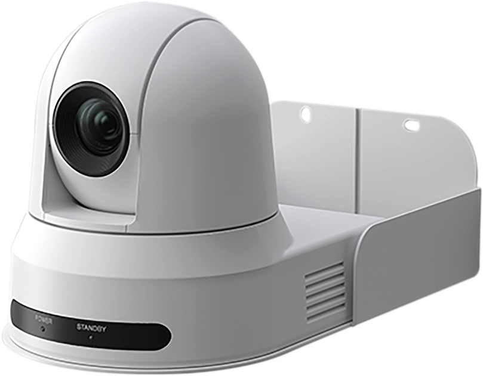
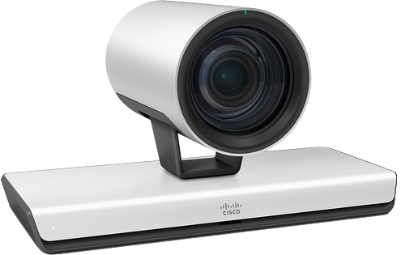

Build custom trigger-zone coordinates for
Cisco Digital Presenter Track. This does not apply
to Motorized Presenter Track. Supported presenter cameras:
Cisco P60 and Cisco PTZ4K.
Presenter Camera View
Sample image shown. Upload your camera view.
Zone Appearance
Theme
Placement
Shape
PNG
Coordinates
Type x,y pairs inside 1920 x 1080. Complete pairs apply
automatically.
Status: Add at least three points to build a Digital Presenter Track
trigger zone.
Zone Editor
1920 x 1080 frame
Drop image to upload
Theme
Color blindness
Add Shape
Capture PNG
Help Guide
Compatibility
Build Cisco Digital Presenter Track TriggerZone coordinates for
Cisco P60 and Cisco PTZ4K cameras. This workflow does not apply
to Motorized Presenter Track.

PTZ4K

P60
What's this tool for?
Cisco's Presenter Camera Mode for the P60 and PTZ4K cameras can be configured with a custom TriggerZone shape.
By default, the WebUI of the codec only allows for a basic rectangular shape, but this is not a limitation of the API. Setting custom shapes can be done by manually configuring the coordinates of the TriggerZone and this tool was built to help you visualize and generate the coordinates for your custom TriggerZone.
Custom TriggerZones allow you to avoid areas that could cause Camera Automation to start unexpectedly, such as a large display with people or a photo on the wall. You can also use custom TriggerZones to avoid areas that are not relevant to your presentation, such as a podium or a table in front of the presenter.
Placement Helpers
Snap to Grid is enabled by default and shows a placement preview.
Adjust Grid spacing when you need coarser or finer alignment. On
mobile, landscape orientation gives the most room for drawing.
Coordinates
Type or paste x,y coordinate pairs. Complete pairs apply
automatically; incomplete pairs are ignored until finished and are
highlighted without changing your text.